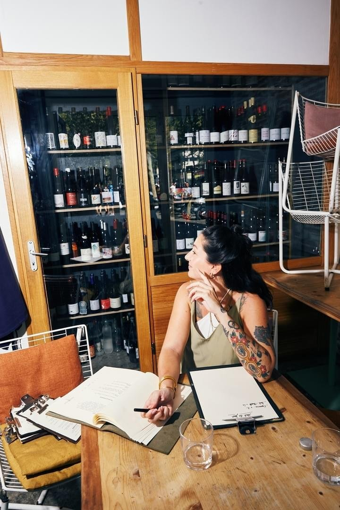
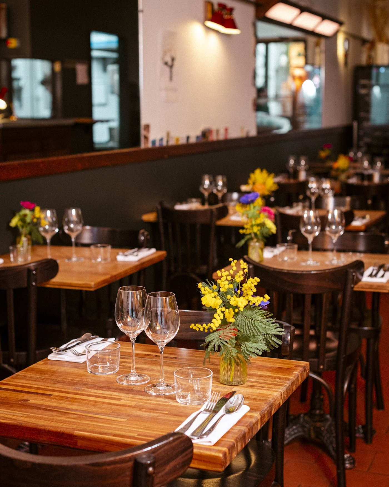
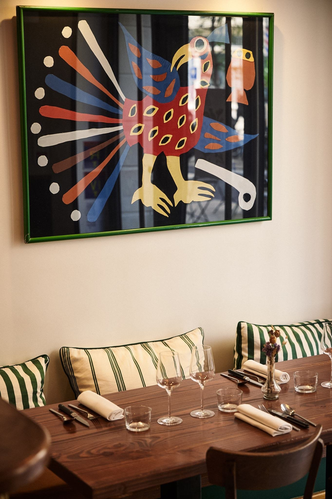
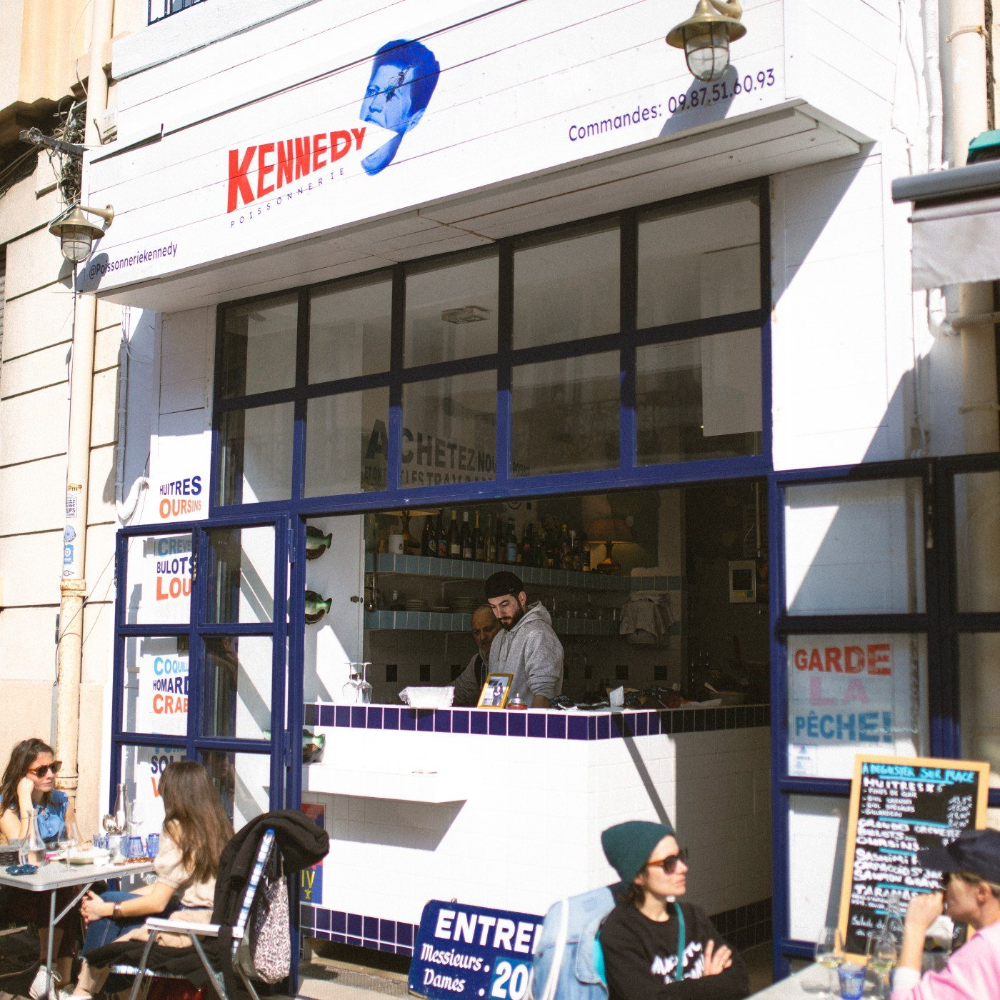

Les 8 meilleurs restaurants de Marseille en 2026
Une seule table à trois étoiles, deux caves à manger qui ont changé leur quartier, un ancien club de plongée au bout de la route des Goudes et une poissonnerie sur la corniche. Huit adresses, vérifiées une par une.

Marseille est une ville qui se mange. Pas poliment : avec les mains s'il le faut, le coude sur la table. La scène gastronomique y a changé de dimension ces cinq dernières années, portée par des chefs qui ont choisi la ville par conviction et non par défaut. Voici huit adresses qui le montrent, avec pour chacune l'adresse exacte, le quartier et ce qu'il faut prévoir.
L'essentielMarseille à table en 2026
- Une seule table à trois étoiles : AM par Alexandre Mazzia, distingué en janvier 2021 et confirmé dans l'édition 2026.
- Le meilleur déjeuner de la sélection est à 28 € : La Mercerie, dans une ancienne mercerie de Noailles.
- Deux caves à manger ont transformé leur quartier : Ripaille au Panier et Figure boulevard Vauban.
- La table la plus spectaculaire n'est pas la plus chère : le Tuba Club, aux Goudes, dans un ancien club de plongée ouvert sur l'anse.
Ce que nous avons vérifié
Ce guide part des adresses qui reviennent le plus souvent dans la presse et les guides, puis vérifie ce qui est vérifiable : l'adresse exacte, l'arrondissement, le quartier, les tarifs quand la maison les publie. C'est peu spectaculaire, mais c'est ce qui distingue un guide d'une liste recopiée. Les critères éditoriaux sont ensuite ceux de notre grille.
Le rangement par quartier a d'ailleurs son importance à Marseille plus qu'ailleurs : entre Noailles, Le Panier, Vauban, Malmousque et Les Goudes, on ne parle pas de la même ville, et certainement pas du même trajet.
| Rang | Nom | Registre | Arr. | Budget |
|---|---|---|---|---|
| 1 | AM par Alexandre Mazzia | Gastronomie créative | 8e | Ordre de grandeur : à partir de 250 € |
| 2 | La Mercerie | Bistronomie, vins nature | 1er | Déjeuner 28 à 32 €, dîner 51 € |
| 3 | Regain | Cuisine de saison, végétale | 5e | Ordre de grandeur : 40 à 55 € |
| 4 | Prémices | Néo-bistrot, produits locaux | 1er | Ordre de grandeur : 45 à 65 € |
| 5 | Ripaille | Bistrot et vins nature | 2e | Ordre de grandeur : 25 à 40 €, vins compris |
| 6 | Figure | Cave à manger | 6e | Assiettes 7 à 14 €, verres 5 à 7 € |
| 7 | Tuba Club | Poisson, vue mer | 8e | Ordre de grandeur : 45 à 70 € |
| 8 | Poissonnerie Kennedy | Poissonnerie et table | 7e | Entrées 6 à 12 €, plats 19 à 25 € |
Les 8 adresses
-
01
AM par Alexandre Mazzia
Marseille 8e · Gastronomie créative
3 étoiles Michelin5 toques Gault&MillauIl y a des restaurants qui changent votre façon de penser la cuisine. AM par Alexandre Mazzia est de ceux-là. Triplement étoilé depuis janvier 2021, distinction confirmée dans l'édition 2026, il occupe rue François-Rocca un espace épuré qui ressemble davantage à un atelier d'artiste qu'à une salle de restaurant.
Le menu dégustation enchaîne une quarantaine de services, comme les chapitres d'un roman dont on ne veut pas voir la fin. Ancien basketteur professionnel devenu chef, Mazzia joue les associations que personne n'ose : framboise et harissa, anguille et chocolat, semoule et crabe. Ce n'est pas un repas, c'est une expérience longue, et il faut compter la soirée entière.
Pour qui ? Les curieux et les épicuriens qui veulent comprendre où en est la gastronomie française. Le budget est conséquent et la réservation se prend des semaines, souvent des mois à l'avance.
- Adresse9 rue François-Rocca, 13008 Marseille
- ChefAlexandre Mazzia
- DistinctionTrois étoiles depuis janvier 2021
- BudgetOrdre de grandeur : à partir de 250 €
-
02
La Mercerie
Marseille 1er · Bistronomie, vins nature
Harry Cummins et Laura Vidal
La salle de La Mercerie, cours Saint-Louis. Photo La Mercerie. Quand un chef anglais et une sommelière québécoise s'installent dans une ancienne mercerie du cours Saint-Louis, le résultat ne peut être que singulier. Harry Cummins en cuisine, Laura Vidal à la cave et Julia Mitton, le trio venu de Paris Popup, forment l'un des attelages les plus attachants de la scène marseillaise.
La salle a gardé le sol en granito, les murs mis à nu et un comptoir en châtaignier, en plein Noailles, quartier populaire s'il en est. La carte joue la bistronomie sans fioritures : produits locaux, rigueur technique, et une cave nature choisie par quelqu'un qui connaît ses vignerons comme ses amis. Le déjeuner, entre 28 et 32 €, est l'un des meilleurs rapports qualité prix de la ville.
Pour qui ? Ceux qui veulent une table sincère et accessible, sans esbroufe.
- Adresse9 cours Saint-Louis, 13001 Marseille
- QuartierNoailles
- MenusDéjeuner 28 à 32 €, dîner 51 €
- RelevéTarifs publiés par la maison
-
03
Regain
Marseille 5e · Cuisine de saison, végétale
Sarah Chougnet-Strudel et Lucien Salomon
La salle de Regain, rue Saint-Pierre. Photo Regain. Dans le calme du 5e, loin de l'agitation du Vieux-Port, Sarah Chougnet-Strudel en cuisine et Lucien Salomon à la cave ont ouvert Regain comme on plante un jardin : avec patience et un vrai projet de goût. La cuisine est ancrée dans le végétal sans en faire un dogme ; la viande apparaît quand elle a quelque chose à dire.
Comptoir de châtaignier et de zinc, petite cour arborée : la salle ressemble à ses propriétaires, sans chichi mais avec du soin partout. Le chou-fleur au tahini de tournesol est devenu un classique de la maison, crémeux et profond, avec cette amertume légère qui réveille le palais.
Pour qui ? Ceux qui cherchent une cuisine honnête à budget raisonnable, et les amateurs de vin bien conseillés.
- Adresse53 rue Saint-Pierre, 13005 Marseille
- BudgetOrdre de grandeur : 40 à 55 €
- Téléphone04 86 68 33 20
-
04
Prémices
Marseille 1er · Néo-bistrot, produits locaux
Benoît Cadot
La salle de Prémices, rue Beauvau. Photo Prémices. Prémices assume d'être généreux, et c'est tout à son honneur. Benoît Cadot y sert un menu du chef dans une salle sur deux niveaux, rue Beauvau, à deux pas du Vieux-Port : éclairage ambré, banquettes épaisses, pas de carte à rallonge mais une cuisine directe et bien exécutée.
Le tartare de taureau sur labneh dit tout de l'état d'esprit de la maison : des produits de Camargue et de Provence traités avec respect. L'aile de raie vapeur confirme que la cuisine de la mer est maîtrisée. Ce qui peut décevoir : la salle du bas manque un peu de lumière naturelle.
Pour qui ? Une occasion spéciale, ou un déjeuner d'affaires qui ne ressemble pas à un déjeuner d'affaires.
- Adresse11 rue Beauvau, 13001 Marseille
- ChefBenoît Cadot
- ServiceDéjeuner du jeudi au samedi, dîner du mardi au samedi
- BudgetOrdre de grandeur : 45 à 65 €
-
05
Ripaille
Marseille 2e · Bistrot et vins nature
Le PanierLe Panier a ses ruelles, ses façades colorées et, depuis Ripaille, son bistrot de référence. Quentin Panabières, dit Napo, passé par Ötap à Bruxelles, l'a monté rue de Lorette avec Chloé Langlais, Simon Erouart, ancien d'Ivresse, et Alix Eliard, venue de l'Auberge de Chassignolles.
L'adresse est coincée entre Chez Étienne, la plus vieille pizzeria de la ville, et le glacier Vanille Noire : autant dire au cœur du quartier. La carte tourne au rythme des arrivages, sans fioriture de présentation mais avec une vraie maîtrise des cuissons. Les prix restent accessibles, ce qui n'est plus si courant dans un Panier de plus en plus touristique.
Pour qui ? Un apéritif qui se prolonge en dîner, entre amis, sans se ruiner.
- Adresse56 rue de Lorette, 13002 Marseille
- QuartierLe Panier
- BudgetOrdre de grandeur : 25 à 40 €, vins compris
-
06
Figure
Marseille 6e · Cave à manger
Quartier VaubanFigure a la couleur d'un boudoir rose poudré, signé de l'architecte marseillais Jérémy Chaillou, et une cuisine qui n'a rien de timide. Christophe Juville, Ferdinand Fravega et Rémi Hernandez ont ouvert boulevard Vauban une cave à manger qui a changé le quartier.
Le tarama à l'huile verte surprend : crémeux, végétal, avec une acidité qui tranche sur la richesse. Les moules au paprika fumé jouent la profondeur sans surenchère. La carte des vins navigue entre naturels confirmés et vignerons moins connus, avec de vrais conseils. Assiettes à partager de 7 à 14 €, verres de 5 à 7 €.
Pour qui ? Un verre qui devient deux, et deux qui deviennent un dîner.
- Adresse90 boulevard Vauban, 13006 Marseille
- ServiceDu lundi au vendredi, de 17 h à 23 h
- TarifsAssiettes 7 à 14 €, verres 5 à 7 €
- RelevéTarifs publiés par la maison
-
07
Tuba Club
Marseille 8e · Poisson, vue mer
Les Goudes
La vue depuis le Tuba Club, à l'entrée des Goudes. Photo Tuba Club. Il faut mériter le Tuba Club. L'hôtel-restaurant est au bout d'une route qui longe la côte rocheuse, à l'entrée du village de pêcheurs des Goudes, dans ce que Marseille a de plus sauvage. Le lieu était dans les années 1980 un club de plongée où Jacques Mayol venait souffler ; il en a gardé l'esprit cabanon.
Cinq chambres seulement, toutes sur l'eau, et une salle de quatre-vingts couverts ouverte sur l'anse avec deux terrasses. La lumière du soir sur la mer est du genre à faire oublier la carte, mais la cuisine rappelle vite à l'ordre : poisson de saison traité avec simplicité, tajine harissa et panisse en déclaration d'amour à la cuisine populaire marseillaise.
Pour qui ? Les journées qui méritent d'être célébrées, quand on a le temps d'aller au bout de la route et de ne pas être pressé de rentrer.
- Adresse2 boulevard Alexandre-Delabre, 13008 Marseille
- QuartierLes Goudes
- BudgetOrdre de grandeur : 45 à 70 €
- RéservationIndispensable en saison
-
08
Poissonnerie Kennedy
Marseille 7e · Poissonnerie et table
Malmousque
La Poissonnerie Kennedy, sur la corniche, à Malmousque. Photo Poissonnerie Kennedy. La Poissonnerie Kennedy, c'est l'honnêteté dans l'assiette. Mi-poissonnier, mi-restaurant, l'adresse est posée sur la corniche à Malmousque, à quelques pas de l'anse qui donne son nom au quartier. À l'intérieur, un loft des années 1970, sols aux teintes de coquillage, chaises pliantes, tables de marbre, et un patio caché.
Ce qui compte ici, c'est ce qui arrive de la mer : la dorade dont les écailles brillent encore, les oursins dont la puissance iodée vous prend à la gorge, les crevettes d'une douceur presque sucrée. La cuisine est minimale par choix, pas par manque de talent : on ne maquille pas ce qui est déjà bon.
Pour qui ? Ceux qui veulent comprendre pourquoi Marseille est une ville de mer avant d'être une ville de terre.
- Adresse245 corniche du Président-John-Fitzgerald-Kennedy, 13007 Marseille
- QuartierMalmousque
- TarifsEntrées 6 à 12 €, plats 19 à 25 €
- RelevéTarifs publiés par la maison
Marseille dans le panorama français
La scène marseillaise n'est plus une curiosité régionale. Une table à trois étoiles, une génération de caves à manger qui ont fait basculer des quartiers entiers, et une géographie qui va du marché de Noailles aux calanques : peu de villes françaises offrent cet écart-là sur quinze kilomètres.
Et sur la côte basque, nos 6 meilleures tables de Biarritz.
Sur l'autre façade, notre palmarès des 8 meilleurs restaurants de Bordeaux.
Et à l'autre extrémité de la carte, nos 8 meilleures tables de Strasbourg.
Sur la même façade méditerranéenne, nos 8 meilleurs restaurants de Nice.
Pour situer ces adresses à l'échelle nationale, notre palmarès des 15 meilleurs restaurants de France. Pour comparer avec les deux autres grandes scènes, les 25 meilleurs restaurants de Paris et notre guide Où manger à Lyon.
Questions fréquentes
Quel est le meilleur restaurant de Marseille en 2026 ?
AM par Alexandre Mazzia, rue François-Rocca dans le 8e. Triplement étoilé depuis janvier 2021, distinction confirmée dans l'édition 2026 du Guide Michelin, il propose un menu dégustation d'une quarantaine de services aux associations que personne d'autre n'ose : framboise et harissa, anguille et chocolat, semoule et crabe. C'est la seule table trois étoiles de la ville.
Où manger du poisson frais à Marseille ?
La Poissonnerie Kennedy, sur la corniche à Malmousque, est mi-poissonnier mi-restaurant : dorade, oursins, crevettes, avec des entrées entre 6 et 12 € et des plats entre 19 et 25 €. Le Tuba Club, à l'entrée des Goudes, sert le poisson de saison avec une vue directe sur l'anse, dans ce qui était un club de plongée dans les années 1980.
Où déjeuner à Marseille pour moins de 35 € ?
La Mercerie, cours Saint-Louis, sert un déjeuner entre 28 et 32 € dans une ancienne mercerie de Noailles : c'est le meilleur rapport qualité prix de cette sélection. Ripaille, au Panier, tourne autour de 25 à 40 € vins compris. Figure, boulevard Vauban, propose des assiettes à partager entre 7 et 14 € et des verres entre 5 et 7 €.
Quel bar à vins choisir à Marseille ?
Ripaille, rue de Lorette au Panier, monté par Quentin Panabières avec Chloé Langlais, Simon Erouart et Alix Eliard, entre la plus vieille pizzeria de la ville et le glacier Vanille Noire. Et Figure, boulevard Vauban, cave à manger au décor de boudoir rose poudré signé Jérémy Chaillou, ouverte du lundi au vendredi de 17 h à 23 h.
Quel restaurant avec vue mer à Marseille ?
Le Tuba Club, 2 boulevard Alexandre-Delabre, à l'entrée du village des Goudes. Cinq chambres sur l'eau, une salle de quatre-vingts couverts ouverte sur l'anse et deux terrasses. La réservation est indispensable en saison. La Poissonnerie Kennedy, sur la corniche, offre une autre façon d'être au bord de l'eau, plus urbaine.
Faut-il réserver longtemps à l'avance pour AM par Alexandre Mazzia ?
Oui. La table est l'une des plus demandées de France et les places partent plusieurs semaines, souvent plusieurs mois à l'avance. Réservez dès que votre date est fixée, sur le site de la maison.
Sources
Adresses, quartiers et tarifs relevés le 31 août 2026 sur les sites officiels des maisons et sur les pages ci-dessous.
- Guide Michelin, fiche d'AM par Alexandre Mazzia.
- La Mercerie, Regain et Prémices, sites officiels.
- Tuba Club et Poissonnerie Kennedy, sites officiels.
- Le Fooding, fiches de Ripaille et de Figure.
- Office de tourisme de Marseille, coordonnées et quartiers.
Une maison qui ferme, déménage ou change de chef, un tarif à jour : signalez-le nous. Les corrections sont datées sur la page.
Les photographies d'établissement sont fournies par les maisons et publiées avec leur accord. Toute maison souhaitant le retrait d'une image peut nous écrire : elle est retirée sans délai. Aucune des maisons citées dans cet article n'a été visitée par la rédaction à ce jour.